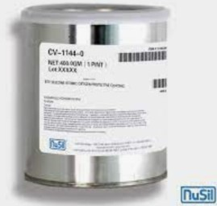

Ref : https://www.ulprospector.com/en/la/Coatings/Detail/25607/578583/CV-1144-0
http://www.lookpolymers.com/polymer_NuSil-CV-1144-0-Silicone-Coating.php
CV-1144-0 is an oxygen protective silicone overcoat that is used for applications where extremely low temperatures and low outgassing are a hazard. It functions as a protective overcoating for electric components and atomic oxygen resistance in space applications. This product also has a broad operating temperature range and can provide radiation and thermal stress resistance.
